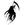

|

Enigmatic Magus
Author of 22 Stories |
"Hmm," said martial artist muttered, glancing along the line his (reluctant) fiancée indicated just in time to watch the speck of light disappear beyond the horizon.
A moment later a muted whistling noise grew on the wind, briefly rising before disappearing abruptly. Thinking nothing of it, Ranma and Akane made their way through the gates of the Tendo Dojo, eager to sit down to the dinner they could smell on the evening breeze.
=====================
Metuo Palam Acerbus By: Taiteki Kagato
Disclaimer and Authors Notes posted at the bottom.
Warning: Graphic scenes of violence and unsettling situations ahead. Read at your own discretion.
=====================
Three weeks since witnessing the shooting star, Ranma Saotome paced by the door, wondering where Akane was. That morning, Kasumi had run to the market against her family's warnings, and after lunch time had rolled by without her return, Akane had run out to find her sister. Now, as bedtime approached, Akane too, it seemed, was missing.
Nabiki Tendo, sister to Akane and Kasumi, daughter of Soun, and future sister-in-law to Ranma, watched the news with morbid curiosity, hoping that the current report had nothing to do with the tardiness of her sisters.
For the past week, an alarming number of people, children, adults, men and women, had been disappearing, apparently chosen at random. Even more unsettling, perhaps, was that the kidnapper was able to take people at all times of the day. There was very little evidence to go by, and the only information the police had given had clearly indicated that they were as baffled as the rest of the populace.
Very little proof of a struggle was ever found, and only one victim had been found so far, the body stashed in a trash heap and mutilated so thoroughly that only after DNA testing had the remains been identified.
Hugging her knees to her chest, but not daring to close her eyes, Nabiki watched for any information she might have missed. When the disappearances had started, Nabiki, along with the rest of Nerima, had shrugged it off, figuring that anyone kidnapping in Nerima would quickly come to a rather violent end.
After a week and twelve disappearances, none of the citizens were shrugging it off anymore. Schools had been closed down, a curfew had been put into effect for Nerima and the surrounding wards, and an invisible-yet-palpable tension filled the air.
All eyes turned to the Ranma as he cleared his throat. Akane had asked him to stay here, and to trust in her, but she'd not returned, and his patience was at its end. Before he could say anything, however, the door to the porch collapsed, atop of which lay a moaning, bleeding Shampoo.
"Airen... they... Mousse..." Shampoo said through clenched teeth. Staring in shock, the rest of the Tendo's tried to understand why she looked somewhat different, but only after Nabiki spoke did they accept what they had previously dismissed as impossible.
"Oh my god... her.. her Arm! Where the hell..." Nabiki collapsed to the floor, and the others could hear retching from where she'd disappeared behind the couch. However, they dismissed that as they realized that Nabiki was right. Shampoo's left arm, curled up against her chest, was nothing beyond the elbow but a shredded, ragged stump slowly oozing blood onto the shattered remains of the door.
Soun and Genma gaped, while Ranma leapt across the room, gently scooping Shampoo up and moving her over to the couch.
"Don't just stand there!" He shouted, shocking the two out of their trance. Soun hurried over, ripping the sleeve off his gi to use as a makeshift tourniquet, and Genma ran to the phone, quickly calling the hospital.
Ranma, stepping aside as Soun tied the cloth around her upper arm tightly, took the moment to examine Shampoo closely, before shuddering as he realized just how bad off she was. Looking past the missing arm, he noticed gashes that tore through muscle tissue and exposed the ivory of her ribs when wiped clean. Her lower right leg was obviously broken, and from the bruise he could see on her thigh, her femur might be fractured as well. One eye was swollen shut, and her right hand was spotted with holes, almost as if she'd been showered with molten metal.
"Who the hell could do this to Shampoo?" Ranma asked softly, as Genma appeared with clean cloth and the first aid kit. Nabiki, meanwhile, was holding back dry heaves as she tried to rationalize the situation.
"Shampoo... no... Aire-Ranma... Ranma... " Shampoo called weakly.
"I'm here, Shampoo. There's an Ambulance on the way. Just stay with us." Ranma said, placing his hand on her shoulder gently, and frowning as she winced at even that light pressure.
"Mousse... taken... Monsters took... Great..." Shampoo's voice was fading in and out, now, and her eyes, already dazed and dilated, were rolling slowly in her head, failing to settle on anything. The sound of sirens rose over the television, and the residents breathed a metaphorical sigh of relief, knowing Shampoo would soon be taken care of by proper medical personnel.
Suddenly, her eyes fell on Nabiki, who'd been peering over her father's shoulder in morbid fascination. For a moment, her eyes lost the wild, shocked look, and Nabiki felt her blood turn to ice in her veins as Shampoo's gaze turned to the cold, lifeless pits no Hollywood Makeup Artists could pull off.
"We all going to die." She stated calmly, moments before the young Amazon began convulsing.
Watching the ambulance disappear into the night, Ranma stared up at the cloudy night sky, then looked over his shoulder at the room behind him. Nabiki sat at the table, staring at the wood so intensely Ranma expected it to catch fire. Soun and Genma were walking around, too upset to attempt a game of Shogi.
"I'm going out to look for them," he declared suddenly, before disappearing outside. Leaping to the compound wall, then to a nearby rooftop, Ranma ran towards the market, where he assumed Kasumi and Akane had last been seen.
Running across the rooftops, Ranma stared down at the streets of Nerima with no small degree of surprise. While it was true that nighttime meant less activity in a suburban area like Nerima, the streets were usually lightly peppered by the late-shift workers, late night movie-goers, and the like.
Staring down at the utterly barren ribbon of asphalt, illuminated only by harsh amber streetlights, Ranma shuddered. He'd grown up alone, and knew what loneliness was. But that was in the middle of nowhere, a forest or a mountaintop. Here, in the middle of a city, the silence was unnatural. Oppressive.
Landing on a roof overlooking the small paved opening in which vendors sold their wares by day, Ranma looked down at the barren stalls, wondering where to search from here. He knew he should search the area for clues, but exactly how to do that, he was uncertain; he was a martial artist, not a detective. Still, he decided to search the first thing that caught his eye, and began scrutinizing the plaza from his vantage point.
Seeing nothing, he was about to leap down, when he heard s soft splash come from somewhere over to his left. Moving over to the side of the building, he realized there was a narrow, dark alley, and the noise he'd heard had come from within. Staring down, he realized that none of the lights shone directly into the alley, leaving the majority in almost total darkness.
Leaping down, Ranma landed haphazardly on a surprisingly slippery uneven surface, wobbling momentarily before regaining his balance. Staring at the ground as if it had purposefully offended him, he realized he'd landed with one foot on a large metal disk, obviously used to cover the large open hole near by. Scowling at opening and the various unpleasant smells that filled the alley, Ranma reached down to replace the manhole cover, only to stop when he noticed something else lying near the opening.
Crouching over the familiar-shaped object, Ranma realized after staring at it for a moment that it was a policeman's badge. He'd seen them in near- darkness enough times during his training trip to place it with only a brief moment of scrutiny. Glancing at the manhole once more, he stood up.
The splash he'd heard was probably the officer in the sewers below. The badge had been left out so that anyone who thought to close the manhole knew there was someone below. Now, Ranma faced a new dilemma. Should he go down into the pitch black (not that this was much better) Nerima drainage system, and offer assistance to the police officer?
Whoever had gotten Shampoo could probably tear a poorly-trained Policeman to shreds, but most people tended to think twice about taking on a law officer of any type, for the repercussion of such an action was almost always an over-the-top manhunt.
The sound of air being sliced by something decidedly sharp was the only warning Ranma had, leaping away from a descending blade. Landing warily, he watched his silent attacker slip on the manhole cover as he had earlier, before righting themselves.
"Look, buddy, I don't know who-" He started, only to be interrupted.
"Ranchan?"
"Uc-Ucchan?"
Ukyo Kuonji, her battle spatula held high, have a quick "yip" of laughter, before she dropper her combat stance and leaned against the wall, panting heavily.
"God, Ranchan. I thought you were..." She trailed off, the relief evident in her posture. Ranma nodded softly to himself, before straightening up and walking over to join her.
"What're you doing out here, Ucchan?"
"Looking for you, Ranma. What'd you think? I went by the dojo, and they said you were out somewhere... is... is it true? About Akane and Kasumi? And Shampoo?" Ukyo's voice had grown softer and more worried, and Ranma closed his eyes as he nodded again.
"Everything they told you is true.. probably worse, from what the paramedics said when they took Shampoo away."
"God... I..." Ukyo said, unsure of how to express the shock that had gripped her heart. Ranma, understanding her reaction, merely placed his hand on her shoulder, then looked up at the clouds that threatened to burst above them.
"Ukyo... Ucchan... You should go home. Stay with Konatsu, where it's safe. I'm sure he's worried sick about you al-"
"Konatsu's gone."
"He WHAT?" Ranma shouted in surprise.
"No! Not... He went home... one of his sisters went missing, and..."
"You mean, you're staying alone? With all this going on?" Ranma asked, incredulously. Ukyo blinked.
"Umm, yeah. I'm not totally defenseless. I mean-"
"Ukyo, you didn't see Shampoo. She was..." Ranma sighed, "look, stay with me, and we'll swing by your place before we go back to the Dojo... I don't want anyone else staying alone if I can help it."
Ukyo blushed lightly at Ranma's apparent concern, then frowned at her own behavior, realizing the situation was far too serious to think about anything but the missing Tendo's. She stood up, nodding once, before looking out at the street.
"So, where to?"
"I want to swing by the Nekohanten real quick... see if there's any clues there."
"Alright," Ukyo said, softly. She watched Ranma leap from wall to wall, quickly reaching the roof of the lower building bordering the alley. Crouching to follow, Ukyo glanced at the opening in the ground as a tomcat within hissed at something or other before leaping off the walls as Ranma had.
She landed beside him just in time to witness a fireball blossom a few blocks away. It dissipated rapidly, the orange and red blast turning into black smoke almost immediately, and Ranma and Ukyo began running in that direction. That was when the rain started to fall.
The two girls arrived at the origin of the explosive, and Ranma gave a little sigh before muttering quietly, "I knew there'd be a problem."
The Nekohanten blazed before the couple, rain hissing angrily as it fell on heated building materials. The sound of approaching sirens reminded Ranma of Shampoo, and earlier, evoking a small shudder, and the two teens watched the fire truck round the corner and approach the burning restaurant quickly.
"Well, I doubt we'll find much here, Ranma..." Ukyo said finally. Ranma looked at the firemen scrambling around below, and turned away from the burning wreckage that had once housed a rival, a teacher, and, most importantly, friends. Nodding silently in the pouring rain, she turned away, Ukyo pausing to watch the flames a moment longer before turning to follow.
The two decided to try spiraling inward towards the market from the Nekohanten, and took off, searching through the rain quickly and quietly. Scouring the roads for any hint of Akane or Kasumi they could, both teens found searching for anything in a pouring rainstorm yielded poor results. Still, they searched on, twice spotting moving shadows that, to their dismay, turned out to be nothing.
Finally, after two hours, the only concrete thing they had found was how miserable a couple hours of searching in the driving rain could be. Neither one wanted to admit defeat, but when they arrived back at the opening to the alley where they'd met that night, Ranma and Ukyo locked gazes for a moment before taking off towards the Ucchan's.
Ranma waited diligently in the doorway, not wanting to get water all over the place. Ukyo hurried around her apartment upstairs, grabbing a couple changes of clothes, and throwing them into a waterproof bag, which she quickly slung over her shoulder.
Grabbing a mop and quickly wiping up the water on her way back to the door, she locked the restaurant up, and she and Ranma headed for the dojo. Entering silently, the two made their way to the bathroom, hoping the furo would help warm their rain-soaked bones before they caught a cold.
Ranma, still a girl, told Ukyo to go ahead first while she went to get some dry clothes. As the redhead walked out the door, Ukyo quickly disrobed, and washed herself quickly, before practically leaping into the furo. Sighing softly as the heat seemed to melt away the cold and tension from the outside in. She tried to relax, but knowing that Ranma was in a similar state, she groaned, stood up, and quickly dried off, slipping into the rolled Kimono she'd managed to stash inside her bag.
A moment later, there was a soft knock on the door, and Ranma called through the door softly: "Ukyo, you finished?"
"Yeah, Ranchan. It's okay, you can come in now."
The door opened to admit the redhead, who was wearing a towel over her shoulder, and a pair of dripping boxers. Ukyo frowned slightly, then rolled her eyes, slipping towards the door. However, before she could exit, Soun stepped in.
"Ranma! Did you find... Ukyo! What is the-" Soun trailed off as he stared at Ranma's bare chest. Rolling her eyes, Ranma stepped into the furo, her chest loosing any appeal it might have had to Soun.
"Thank you. Where was I?"
"'What is the,'" I think, Ukyo offered softly.
"Oh yes. Ranma! What is the meaning of this? You go out to look for Kasumi and Akane, and you return with Ukyo?"
"It's not like I didn't look-" Ranma started.
"'WE,' Ranchan," Ukyo corrected.
"Err, yeah, we both looked, but we didn't find anything. Anything at all," Ranma stared down at the floor as he finished, and Soun's anger began to fade. Before he could ask, however, Ranma continued.
"Konatsu left Ukyo, and, well, I didn't want to leave anyone alone, so I told her she could stay."
"Mr. Tendo, I'm sorry to intrude. I... I'll go back to my place now, and tomorrow, Ranma can come get me to help him search for your daughters," Ukyo said, bowing apologetically.
Soun looked at her in surprise, then shook his head, "no, Ukyo, it's alright. Ranma was right. You can stay in Akane's room tonight."
Ukyo nodded, bowing and thanking him as she withdrew from the room. Soun looked at Ranma like he wanted to say more, before sighing and walking out the door. Ranma sat down, tossing the towel over the changing room door, and shivered as the heat drove the cold deeper, before vanquishing it completely.
After he'd reached a more comfortable internal temperature Ranma stood, briefly stretching out the muscles the hot water had loosened. Making his way quickly to the room he shared with his father, he slipped into some fresh clothes, and climbed into his bed.
Tossing and turning, however, was the only thing he could accomplish, and finally he sat up, staring at the pouring rain outside the window for a moment before climbing to his feet.
"Akane," he whispered to himself, a shiver going up his back. What was he doing, trying to sleep, while Akane- 'And Kasumi!' he reminded himself- were both out there somewhere.
"You're going to go look for them again, eh?" someone asked from the doorway. Ranma grunted, the answer rather obvious.
"Don't worry, Sugar, I understand. We were probably thinking the same thing."
Ranma turned to look at Ukyo, and blinked as he realized she was dressed in her Okonomiyaki-seller's/fighting outfit, spatulas ready. She walked into the room and stood beside him, before turning her gaze towards the window and the rain beyond. Neither of them said anything, for a moment, and finally, Ranma moved to get something a bit warmer on.
"Don't go."
Ukyo and Ranma both froze as a new voice spoke from out in the hallway. Nabiki walked in, looking somewhat pale in the muted light leaking in from the window. The streetlight was far enough away that, with the rain, any illumination it provided was practically ephemeral.
"I... we have to," Ranma said, finally.
"What's the point?" Nabiki retorted harshly. Ukyo's jaw dropped, and Ranma glared at her. His mouth opened to speak, but before he could say anything, Nabiki continued, "Don't forget, Saotome, that Akane was my sister LONG before she was your fiancée."
"Then why...?" Ukyo asked, softly.
"Because, it's pitch black out there, it's pouring rain, and you're both nearly exhausted. I doubt you could find much more than a street light in these conditions. Wait until the morning, and I'll make some calls. Everyone who owes me anything will be here to help you two search. We'll turn Tokyo upside down if that's what it takes to find my sisters."
"I... I don't..." Ranma started, hesitantly.
"Sao... Ranma... You may not realize it, but Daddy and I... and Mr. Saotome too, I think, wan... need you here. We both saw Shampoo... whoever did that to her, if they got to us..." Nabiki trailed off as she hugged herself, shivering despite the relative warmth of the room.
"Please wait, Ranma," Nabiki said, finally. Ranma was about to protest again, when he saw the tears glimmering in the dim light, and realized that Nabiki was truly scared; frightened even. Taking a step back, his movements echoed by Ukyo, who'd noticed the tears as well, Ranma stared at the floor, holding back the retort to this seemingly unprovoked attack, and finally nodded in defeat.
However, before Nabiki could disappear, he spoke, "you'd better make those calls... we're getting up early-"
"Six O'clock," Ukyo interjected swiftly. Ranma nodded, continuing, "And we're leaving to look for her at..." he paused to think of a good amount of time to give everyone, before speaking again, "seven-thirty. Enough time for anyone who's serious to get here, no matter where in Nerima they are."
"Fine." Nabiki said, her tone business-like once again. She backed out of the room, and disappeared down the hall, leaving Ranma and Ukyo alone with a snoring Genma-Panda.
Ukyo looked at the window, briefly considering searching alone, since only Ranma'd given his word, before turning towards the door. From what she'd understood, Shampoo'd been utterly defeated, and while Ukyo knew she was better than the Chinese Amazon, she seriously doubted she could handle someone that managed to defeat Akane, Shampoo, Mousse, and most likely Cologne, as well. Vowing to go on a lengthy, intense training trip when this ordeal was all over, Ukyo slipped out the door, and headed for her room.
Ranma watched Ukyo go, and knew she wished to continue searching almost as much as he did. But, despite Nabiki's apparent fear, the middle Tendo had managed to keep the two anxious fighters inside for a night he knew would relinquish little (if any) sleep. Sliding back under the covers, Ranma closed his eyes, and surprisingly fell asleep almost immediately.
"KASUMI! AKANE!" someone shouted, jolting the residents of the house out of their uneasy slumber. Ranma glanced at the clock, which read "5:57", before jumping to his feet. Running towards the stairs, Ranma heard a cough come from below that sounded exceedingly familiar. Forgoing the stairs and leaping to the floor below, Ranma was greeted to the sight of both 'missing' Tendo daughters sitting down and sipping what looked like tea.
"A-Akane!" He said, relief flooding through him. She was disheveled, wet, and looked flushed, but none of that mattered, as to him, she looked absolutely wonderful. Tearing his gaze from her, he realized Kasumi was in a similar condition, and moved towards the table to sit down and find out where they'd been.
Genma, Ukyo, and Nabiki also joined the no-longer missing sisters at the table, while Soun emerged from the kitchen a moment later with more tea, some of which he used to turn Genma back into a human.
"What?" Ukyo finally queried, while Nabiki asked "how?" at the same time.
Both sisters glanced at each other before Ranma spoke, "Where the hell have you two been?"
Akane looked down at her tea, coughed as if to get the attention she already had more than enough of, then replied softly, "I don't know."
"You don't know... or you don't want to say?" Nabiki asked, a sinking feeling in her stomach.
"I... Akane and I... We're not really sure where we were. Or what happened," Kasumi said, softly. Nabiki worried more, but hesitated to say any more.
"But, I mean, you have to remember something! I mean, how'd you get here?" Ukyo said, hitting the table with her palm, and causing everyone sitting around it to jump. She blushed and settled back down, thankful nobody seemed surprised by the outburst, and after a moment of awkward silence, Akane spoke again.
"The first thing I remember is waking up in... a room. It was dark, and I was tied up somehow..."
"Some sick bastard is going to pay," Ranma stated evenly, his fists clenched.
"Oh, my! It's past Six! I have to get breakfast started!" Kasumi said, climbing quickly to her feet.
"Kasumi! Don't worry about breakfast, I'm sure we can go without making you work for one morning," Soun said, finally breaking his silence. While his tears of joy were still cascading down his face, his back was straight, and he looked 20 years younger than he had the night before.
"That's right, Hon. I can cook this morning." Ukyo said, standing up. Kasumi, however, would have none of it.
"But, that would be improper and rude of me! I promise, Father, I feel fine. Just a sore throat. I actually feel better than fine!"
"Are you sure?" Nabiki asked, looking for any sign that someone had forced their way on her older sister. Seeing none, she sighed, while Kasumi nodded.
"Well, then... I suppose if you insist... Akane, what else do you remember?"
"Well, like I said, it was dark, and I was tied up, but I managed to pull my arms free after a while-"
All conversation stopped as Kasumi appeared to collapse. The Tendo's and Saotome's moved seemingly as one over to where she'd hit the floor, everyone asking if she was alright at once. Kasumi's face was flushed, and she had a large, worried frown on her face. Then she started screaming.
Not words, or in fear, these were soul-rending screams of utter pain, and the collective group of would-be-helpers took an unconscious step back as she began writing on the floor in obvious agony.
"Kasumi!" Soun cried, when he realized she was having some sort of seizure. He stepped forward, taking her flailing hand in his before yelling at those gathered behind him to call for help. Kasumi stopped struggling for a second, her beet-red face covered in sweat, then she moaned. It didn't last, however, as the moan grew into a roar, and suddenly there was a muffled tearing sound, and Soun felt moisture coat his face. Blinking, he looked down in horror, as Kasumi shuddered, her chest heaving, as something seemed to push out of the tear visible through her ripped blouse.
Everyone, even Soun, stepped back in utter horror as a worm-like 'thing' slithered its way out of Kasumi's bloodied clothing, and coiled up on her chest. It snarled at them then, its eye-less head looking around the room briefly before springing itself towards Soun, who was closest.
Soun shrieked as it did so, then shrieked again as the creature wormed its way into his gi. He began jumping around in a way that would almost seem comical, had the creature causing the commotion not just chewed and punched its way out of Kasumi's chest. However, when Soun stopped jumping around, and started screaming, a bloodstain above his right hip suddenly growing large, the macabre entertainment ended.
Nabiki fainted, and Genma stood still, unsure how to help his friend without getting attacked by the horrific little demon himself. Akane was switching back and forth from bawling and retching in the corner, and Ukyo simply joined Nabiki on the floor.
Ranma stood frozen, much like his father, until he realized Soun was being eaten alive, and he had to do something. Moving as fast as he could, he tore Soun's gi off, which exposed a ragged, oozing hole in the older man's side, the tapered tail of the creature still visible. It curled up as Ranma exposed it, like some grotesque, alien finger beckoning to a lover.
Ranma wrapped his hand around it and pulled, surprised at how much of a fight the little worm-like demon put up. Still, after a short fight, only the head remained inside, and Ranma blanched as he saw that there was a dark red organ of some sort in its teeth. Before he could consider what to do, the creature bit down, tearing a large chunk of flesh from the organ, which began to bleed profusely. Soun collapsed then, and Ranma threw the worm across the room as it began twisting around to bite at him.
" Kijin Raishuu-Dan!" Ranma heard Genma shout, the elder Saotome launching a vacuum blade across the room, which bisected the worm-thing into two gory, pale pieces.
"What the fuck was that!" Ranma shouted, as steam started rising from the split body. Soun collapsed beside his eldest daughter's corpse, blood slowly pooling under him. Genma approached the dead creature cautiously, yelping involuntarily as he tried waving the steam away and his hand suddenly began stinging, like he'd put it in fire.
Staring at his hand like he'd never seen it before, he watched it slowly swell and turn an angry red, the stinging pain spreading up his arm somewhat before stopping. A faint hissing noise tore his gaze from his hand back down to the creature, which he now realized was leaking some sort of acidic fluid all over the floorboards. Said acid was quickly eating a hole in the floorboards which steadily grow, until the creature's parts disappeared into it.
Ranma watched the milky acidic fumes waft from the edges of the hole and shuddered, before turning to Soun and Kasumi. He felt his gorge rise as he looked at the confused terror frozen on Kasumi's lifeless face, before turning his gaze to Soun. The Tendo Patriarch was trembling, unconscious, and a sickly pale-yellow, prompting Ranma to run for a phone.
Quickly dialing the hospital for another ambulance, he decided, wisely, to tell them there were two training incidents, mentioning the Dojo name, before giving the address, and hanging up.
"Akane, put pressure on your father's wound, I've got to see if that thing is really dead."
Akane sat there, quivering in the corner, and staring down at the puddle of mucous and vomit she'd managed to heave up.
"Akane.." Ranma said, softer. Still no response whatsoever.
"Akane, Look, I know this is... this is hard for all of us, but your father needs to be taken care of, and Someone needs to make sure...Akane?"
As he moved closer, he heard her mumbling softly, but only after he'd gotten right up next to her, did he realize she was praying almost too quickly to comprehend.
Sighing, he moved over to Soun, hoping the creature was truly dead, before putting pressure on the gaping wound in Soun's side. Genma finally made his way to the kitchen, making a bowl of ice and placing his hand in it. He hoped whatever that acidic stuff was, treating it like any other burn would help it.
Taking stock of the situation, he kneeled beside his son, his face ashen, before speaking.
"I'll take care of Soun... I think, son, it'd be best if you moved your Fiancée, Ukyo, and Nabiki out of the room." Ranma nodded, and stood up as Genme slid his hand under Ranma's to keep pressure on the ragged wound.
Ranma glanced at the unconscious Nabiki and Ukyo, then the confusing Akane, before sighing and turning to look at Kasumi. Shuddering once, and feeling his eyes tear up, he hesitantly approached her, keeping his gaze on her face, and not her chest, before kneeling over her, and closing her eyes gently. Shivering again, he backed away hastily, before turning away and moving towards Akane.
"Akane... lets get you to your room."
She continued praying, again giving no indication she'd heard him. He repeated himself a little louder, to which she continued ignoring him. He sighed, and placed his hand on her shoulder, gaining a reaction he'd not expected.
With a loud sob, Akane flung herself at Ranma, hugging him so tightly the breath was forced from his lungs. Ukyo and Nabiki awoke to this, and slowly sat up, looking around in surprise.
They both spotted Kasumi and Soun at the same time, but both reacted differently. Nabiki started hyperventilating, the floor seeming to move beneath her as she fought to stay conscious. The floor rippled in her vision, and only after staring at it did she realize she was crying. Then she broke down, her ice-queen façade shattering utterly, and began crying in earnest. Ukyo, unable to tear her eyes away from the gaping hole in Kasumi, crab walked away from the body swiftly, not stopping after she reached the wall, and pushing ineffectively at the floorboards as she tried to get more distance between her and the body.
Akane sucked in a ragged breath, before sobbing loudly again, and Ukyo jerked her head over to look at the distraction, finally able to tear her eyes from the gruesome scene.
Akane began mumbling incoherently and rapidly, and Ranma tried in vain to make sense of it all. Ukyo, watching Akane hold Ranma tight, felt none of the jealousy she would have if this situation were not so grim. Instead, her vision went blurry, and she stiffly crawled over to the two, holding back the tears until she was embracing the two as well.
Akane continued mumbling, but Ranma wrapped his arm around Ukyo, giving her a thankful look that she totally missed as she cried along with Akane. Ranma opened his eyes as he felt another arm wrap around him, and spun quickly, only to find Nabiki joining in the mass hug.
It seemed like forever, but finally, the sound of sirens were heard in the distance, slowly growing louder, until they stopped outside the compound. Running inside, the paramedics spotted the prone figures right away, and rushed over, only to stop in horror as they finally got a good look at Kasumi.
"Dear god..."
"What the fuck..."
"I can see into her goddam chest!"
The three paled when the realized the crying mess in the corner was staring at them in horror and disgust, before quickly shutting up. The three quickly surrounded Soun's body when they realized he was the one in need of immediate medical attention, the younger girl obviously dead.
While two of the paramedics began working on Soun, the third pulled Genma aside, intent on asking what had happened. Then he looked at Genma's hand. The swelling had immobilized the hand, and blood was now dotting his hand as it forced it's way through the skin.
"God, this looks like... hmm... Have you been working with any strong acids or alkalis recently?"
Genma stared dumbly down at Soun, until the paramedic spoke louder, "Sir?"
Jumping, as if he'd been slapped, Genma turned to the hole in the floor, the smoky vapor no longer rising from within.
"Smoke from that fluid, I.. what..." Genma muttered.
Moving towards the hole, his eyes widened considerably as he realized it wasn't cut from the floor, but eaten, as if an incredibly strong acid had been spilled here. Looking down, he saw that one of the support struts for the house was totally eaten through as well, the darkness under the house swallowed up anything else that had been damaged.
The paramedic nodded to himself, reaching for his walkie-talkie and calling ahead for some Calcium Gluconate Gel be readied for their return.
The other two had managed to bandage Soun's wound, but the look they gave each other was one of little hope. The body below them was almost drained of blood, and from what they could see of the wound, whatever had gotten into his side had made a mess of his internal organs.
Getting Genma to go along with them was a bit of a hassle, but Ranma's reassurance that they'd be okay, and the throbbing purple mess of his hand finally convinced him, and with a promise to return as soon as possible, the ambulance took off.
Before the siren could fade into the distance, the faster siren of a police car grew, approaching rapidly. A minute later, a Police officer stepped him, reacting similarly to Kasumi as the paramedics had.
Regaining his composure, he radioed for the coroner, and moved towards the huddled mass of children, intent on finding out what the hell had happened.
"Excuse me... Kids? I'm Officer Nakahara, and I need to ask you a few questions..."
An hour later, the officer closed his notebook in disgust. Akane and Nabiki's elder sister was lying dead with a gaping hole in her chest, and they kept talking about monsters for Mars or something.
The younger sister, 'Akane' her sister had told him, hadn't spoken at all, leading Nakahara to believe they were hiding something, and she might be his way of finding out what had really happened.
Upstairs, in Nabiki's room, Ukyo and Ranma tried getting Akane to speak, with no luck. Finally, Nabiki stopped them.
"It won't work."
"Wha?" Ranma said, turning to her with a frown, "Well, I'm not going to just give up! Why the hell aren't you trying anything?" Ranma nearly shouted, realizing Nabiki'd gotten very cold once the huddle downstairs was broken up by the nosy policeman.
"Akane..." Nabiki said, her voice quavering, "Akane..." this time it broke, and the final syllable came out as a hoarse whisper.
"Nabiki, what's wrong?" Ukyo said, not understanding. Ranma looked at Akane, then Nabiki, confused, and Nabiki growled, tears falling down her face again.
"Don't you get it? Akane was with Kasumi. In the SAME PLACE! At the SAME TIME!" Both Ukyo and Ranma stared at Nabiki, then leapt back from Akane as realization hit.
"No... no no no nononono-" Ranma started, sinking to his knees in horror.
"Akane..." Ukyo whispered, before putting her hand to her mouth, tasting bile in the back of her throat. Both felt their eyes go watery.
Akane suddenly looked at Ranma, her face transforming from panicked fear to a lifeless look of resignation.
"Kill me."
Ranma felt like he'd been kicked in the stomach. Thinking back, he'd been feeling it since this nightmarish day had started, but this time, he felt something spiritual break. He began breathing heavily, the air in the room suddenly growing cloyingly thick. Ranma felt like he was fighting for each breath; as if the atmosphere had suddenly decided not to relinquish the oxygen within.
"What?" he asked weakly, panting.
"Kill me, Ranma. Before... before..." she trailed off, and looked at the door, mentally looking past it, at her dead sister, currently being carried away inside one of the black bags that, up until this morning, she'd only seen in movies.
"Akane, I..."
"Damnit Ranma! How hard a request is this! I didn't ask you to marry me, and you sure as hell aren't my idea of the perfect guy, but I love you, and I can't... I want... " She trailed off, shuddering for a moment before breaking down into quiet sobs, and Ranma watched, helpless, as Akane cried, each breath bringing her closer to her last.
"I... You..." Ranma sighed, then looked at the floor, before continuing, " Akane, I know you didn't... want this relationship, and, well, I know I've not been the best guy at times.. but I.. I don't think I can. I.. I Love you too much to take your life."
Ukyo didn't react at all to this, instead staring at Akane with wary sorrow. When Akane turned to her, Ukyo jumped slightly.
"Then... Ukyo, could you.."
"No!" The chef shouted, falling back as her legs gave out from underneath her. Akane kneeled on her bed, and stared at the comforter below her, tears steadily falling towards the center of her vision.
"So that's it, then? You're going to let me die Like Kasumi... Like..." She shuddered and sobbed again, pausing to cough, to which Ranma, Ukyo and Nabiki inched back until she stopped.
"Akane." Nabiki said, finally. When Akane failed to acknowledge her, she repeated herself a little louder, " Akane."
Akane looked up, and Nabiki stared into her eyes, trying to memorize every feature while she still could, before turning around and moving towards her closet. Pulling a false panel out of the wall, and quickly spinning the dial of a small wall safe, she swung the well-oiled door aside quietly, reaching inside before pulling something small and black out.
It took a moment before Ranma realized he was looking at a small, deadly, and very illegal revolver. Ukyo gasped as she realized what she was looking at as well, and Nabiki fumbled with the weapon for a moment before finally opening the cylinder and making sure it was as unloaded as she'd left it.
"Nabiki..." Akane said, softly.
"I can't... I won't do it... but this is the most painless way I can think of, if you can find someone capable of pulling the trigger." Nabiki reached into the safe, and pulled out a speed loader, removing one of the bullets before putting it back. Handing both to Akane, Nabiki's façade melted, and she embraced her sister, crying on Akane's shoulder while Ukyo and Ranma still tried to grasp what Nabiki had just offered.
Nabiki pulled away from Akane for a moment, before turning to Ranma and Ukyo, and asking them to leave for a few minutes.
"You aren't..." Ukyo started, staring at the weapon lying on the bed beside Akane. Nabiki shook her head no, then shut the door, leaving Ukyo and Ranma alone in the hallway.
Officer Nakahara suddenly appeared at the top of the stairs, and Ranma and Ukyo turned to him when he cleared his throat.
"More questions?" Ranma asked, scowling. The officer had the courtesy to blush, and Ranma sighed, stepping towards the officer and away from the door. When he and Ukyo had gotten closer, Nakahara spoke in hushed tones, wringing his hands together. He hated giving bad news at a bad time, but it was his job to.
"I... I regret to inform you that Mr. Tendo passed away in the hospital after a lengthy battle in the OR to save him. From what I was told, it was a combination of blood loss, shock, and some sort of trauma to the liver."
Ukyo slid down the wall to the floor, while Ranma stood swaying on his feet as if he hadn't gotten any sleep in weeks. Apologizing again, Nakahara withdrew quietly, leaving them alone after handing Ranma a card with his cell phone number on it. Ranma stared at the floor, wondering what else would happen, before turning to look at Ukyo, who was staring up at him.
"Well... we have to tell them..." Ranma said, finally. He turned to go, but Ukyo reached out and grabbed his leg, her grip so tight the feeling in his foot began fading almost immediately.
"Not yet. Not... not Akane. Tell Nabiki, but you.. we.. shouldn't tell Akane."
Ranma frowned, before pausing to think about it. Akane was... dying, and Ukyo wanted to give her some small bit of happiness before... Ranma shuddered, managing to turn the final shakes into an exaggerated nod, before Ukyo let him go, and slowly climbed to her feet.
=====================
Disclaimer: Rumiko Takahashi owns Ranma ½. The Aliens series is owned by 20th Century Fox. I'd like to thank Rumiko Takahashi and Ridley Scott, James Cameron, David Fincher, and Jean-Pierre Jeunet for making such wonderful worlds.
Authors Notes: Holy geeze, was that fun to write. Yet to come is the conclusive part two, in which more stuff happens. This story came about after reading the fic Predator and Prey, by Benares, and realizing to my dismay that there were, as far as I could tell, no Aliens crossovers with the Ranma-verse.
The reasoning behind such a lack was somewhat confusing because, despite the difference in story-type, weirder, less-likely crossovers have been and will (most likely) be made. So I figured I'd give it a go. Unfortunately, after thinking up an outline, I realized I had fallen into a trap that was only apparent once I wrote out the first few scenes. Deciding to go for broke, I re-wrote the outline, which ended up much more like this.
Hopefully it was as shocking to you all as it was to my pre-readers, who I'd like to thank.
Nathan Huss (Wakoid2), Parker Schadegg (Mikhal001R), and Anthony, Thanks for all the help. Nathan also wishes to express that he had no influence on my decisions of who died, and that he doesn't think this story will be well received, whatsoever.
Please C&C as I can't expect to get better without it.
-Kagato

|
Review this Chapter |